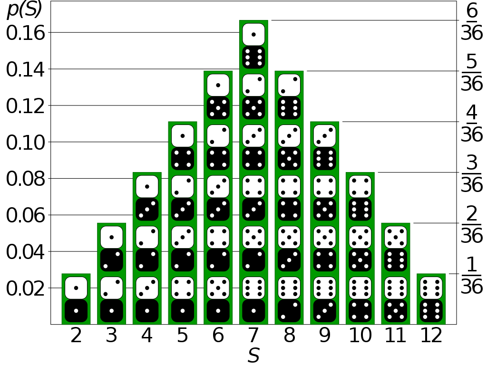
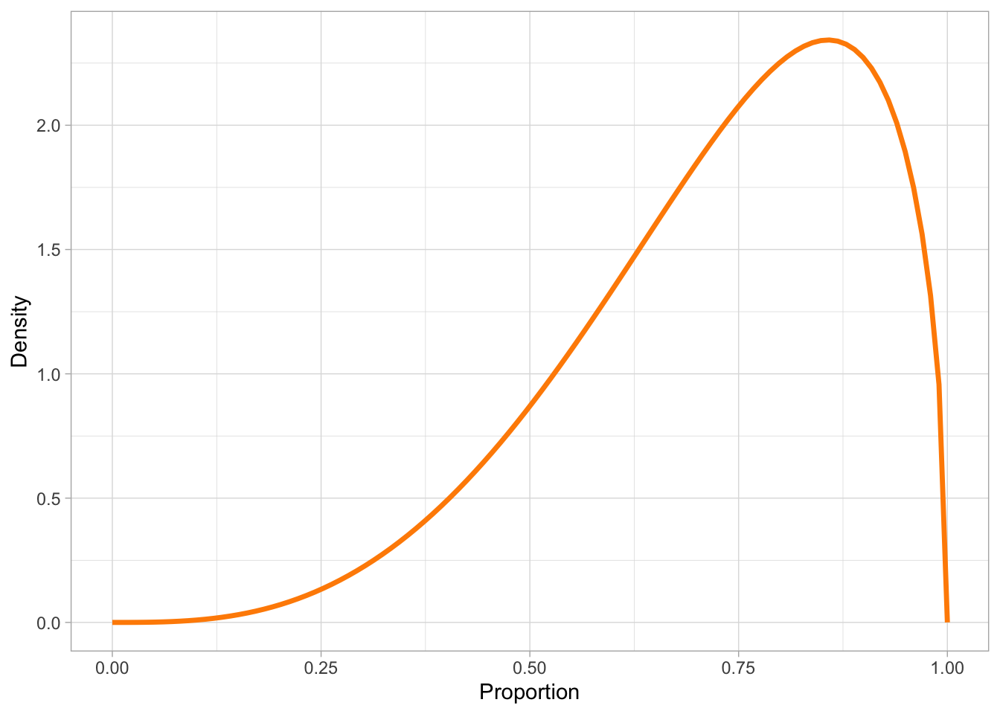

[1] 150 172 161 162 161 172 178 156 171 158QML - Week 4
Bayesian inference
Stefano Coretta
Probabilities
Note
Probability
Probability of an event occurring.
Probabilities can only be between 0 and 1.
- ⛔️ 0 means impossible.
- ü§∑ 0.5 means it can happen but it can also not happen.
- ✅ 1 means certain.
Probabilities

Probability
Probability of an event occurring: 0 to 100% probability.
Probability of a statistical variable being some numeric value: a bit more complicated…
We need probability distributions!
Distribution of probability
Probability distributions
A probability distribution describes how the probabilities are distributed over the values that a variable can take on.
Two types of probability distributions
Discrete probability distributions.
Continuous probability distributions.
You learned about discrete and continuous variables in Week 2!
Discrete variables (numeric or categorical) follow discrete probability distributions and continuous variables follow continuous probability distributions.
Calculating probability distributions
You will never need to calculate probability distributions by hand, but it is useful to know about the two mathematical functions that are used for that purpose.
The Probability Mass Function (PMF) for discrete probability distributions.
The Probability Density Function (PDF) for continuous probability distributions.
Probability Mass Function
Probability Density Function
Parameters
Probability distributions can be summarised with a set of parameters.
Different types of probability distributions have a different number of parameters and different parameters.
Gaussian distribution
The Gaussian probability distribution is a continuous probability distribution and it has two parameters:
- The mean \(\mu\).
- The standard deviation (SD) \(\sigma\).
Go to Seeing Theory (by Daniel Kunin).
Simulate Gaussian data
Human height
Simulate human height as a Gaussian variable.
rnorm(): number of observations, mean, SD.
Kernel Density Estimation
PDF constructs the density curve of theoretical distributions.
Kernel Density Estimation (KDE) constructs the density curve of empirical data (observations).

Statistical modelling
When you simulate data, you know the population mean and SD.
In research, you don’t. You just have observations.
Statistical modelling
Statistical modelling allows you to estimate the mean and SD of the population from the sample. This is statistical inference.
Bayesian Gaussian models do exactly that: estimate mean and SD.
Gaussian model of height
\[ \begin{align} h & \sim Gaussian(\mu, \sigma)\\ \mu & = ...\\ \sigma & = ... \end{align} \]
Gaussian model of height
\[ \begin{align} h & \sim Gaussian(\mu, \sigma)\\ \mu & = P_\mu\\ \sigma & = P_\sigma \end{align} \]
- \(P\) is a posterior probability distribution.
Gaussian model of height: brms
Gaussian model of height: posteriors
A bit harder: N = 5
Sample size
Sample size matters: the lower the sample size, the higher the uncertainty.
Let’s try with just 5 observations (out of 200).
A bit harder: N = 5
Summary
Probability distributions describe how probability is distributed across values.
Theoretical probability distributions can be visualised with PMF/PDF and summarised with parameters.
KDE is used for empirical distributions.
(Bayesian) Gaussian models infer the population probability distribution from the data, by estimating posterior probability distributions of mean and SD.
Sample size affects uncertainty.